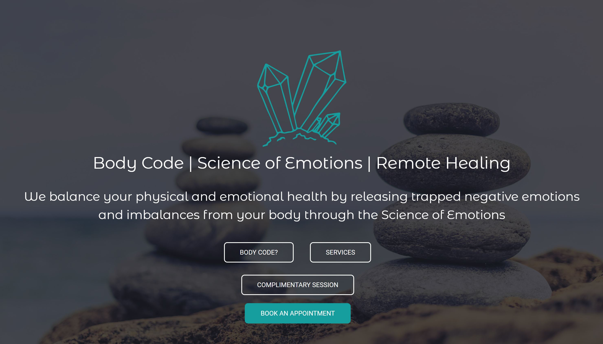
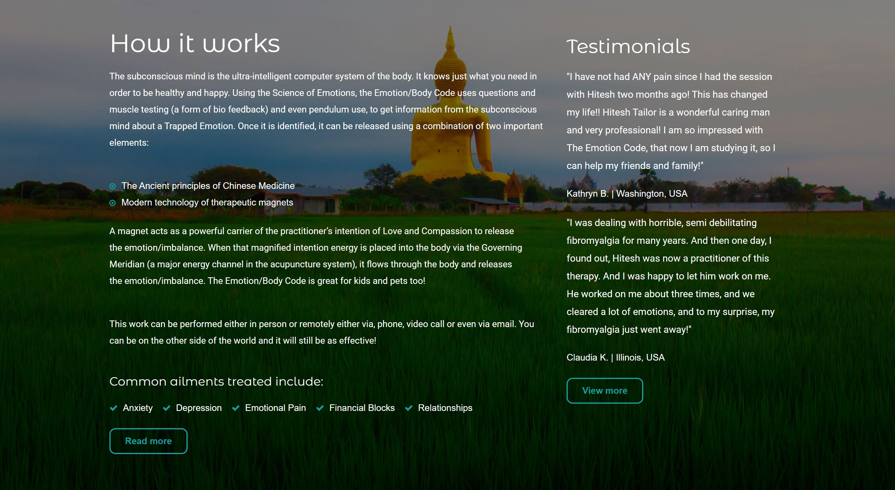
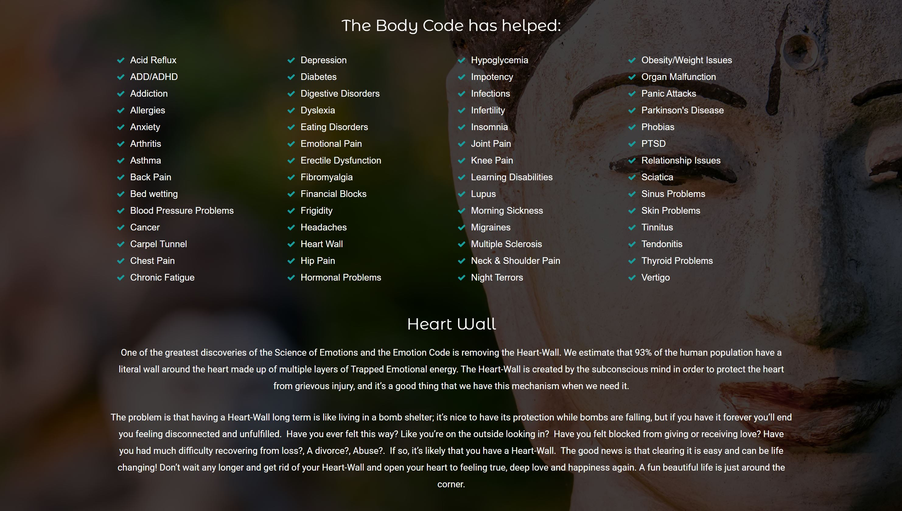
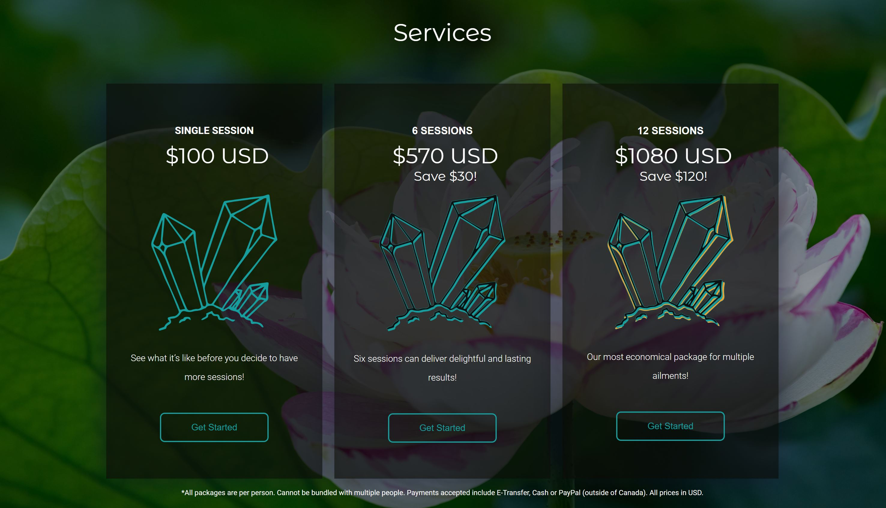

Visit Tailored Coding
WordPress | CSS | Elementor
Created a new website layout for Tailored Coding, an alternative healing company. Worked with client to create new design and implement images and logo they already had.
Implemented responsiveness in order to adjust to any screen size. Desktop, tablet and mobile.


Work as the website manager and make changes to the website based on client requests.
Implemented appointment scheduling for the client through Acuity.
